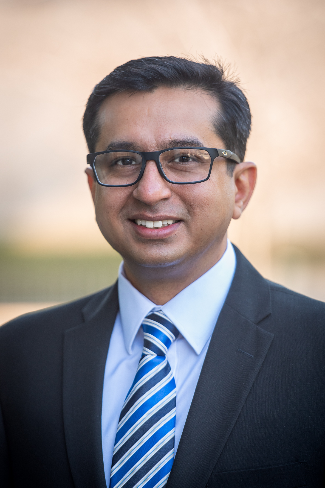

Chikage Noishiki, MD, PhD
Instructor
Investigates vascular aging and molecular mechanisms of vascular and cardiac disease using human iPSCs and next-generation sequencing.
Our team brings together expertise in cardiovascular biology, stem cell biology, vascular surgery, human disease modeling, biobanking, genomics, and translational medicine.

Nazish Sayed, MD, PhD, is a physician-scientist whose laboratory investigates cardiovascular disease using human iPSC models, multicellular cardiac systems, vascular biology, genome engineering, and single-cell and spatial multi-omics.
The lab's research focuses on understanding how interactions among cardiovascular cell types contribute to disease and how these mechanisms can be translated into new therapeutic strategies.
Investigates vascular aging and molecular mechanisms of vascular and cardiac disease using human iPSCs and next-generation sequencing.
Oversees biobank operations and supports the integration of patient-derived biospecimens with the lab's translational research programs.
Investigates vascular disease using patient-derived iPSC endothelial and smooth muscle cell models and single-cell multiomics.
Works at the interface of cardiovascular medicine and human disease modeling to investigate mechanisms of cardiovascular dysfunction.
Bridges vascular surgery and translational research, connecting clinical questions with experimental cardiovascular models.
Investigates cardiovascular mechanisms using human experimental models with an emphasis on translational and disease-focused research.
Supports experimental research across the lab's cardiovascular disease modeling and translational research programs.
We welcome inquiries from scientists interested in cardiovascular biology, human iPSCs, organoids, genome engineering, vascular biology, and single-cell and spatial genomics.
Explore Opportunities →Former trainees and researchers who have contributed to the lab's scientific community.